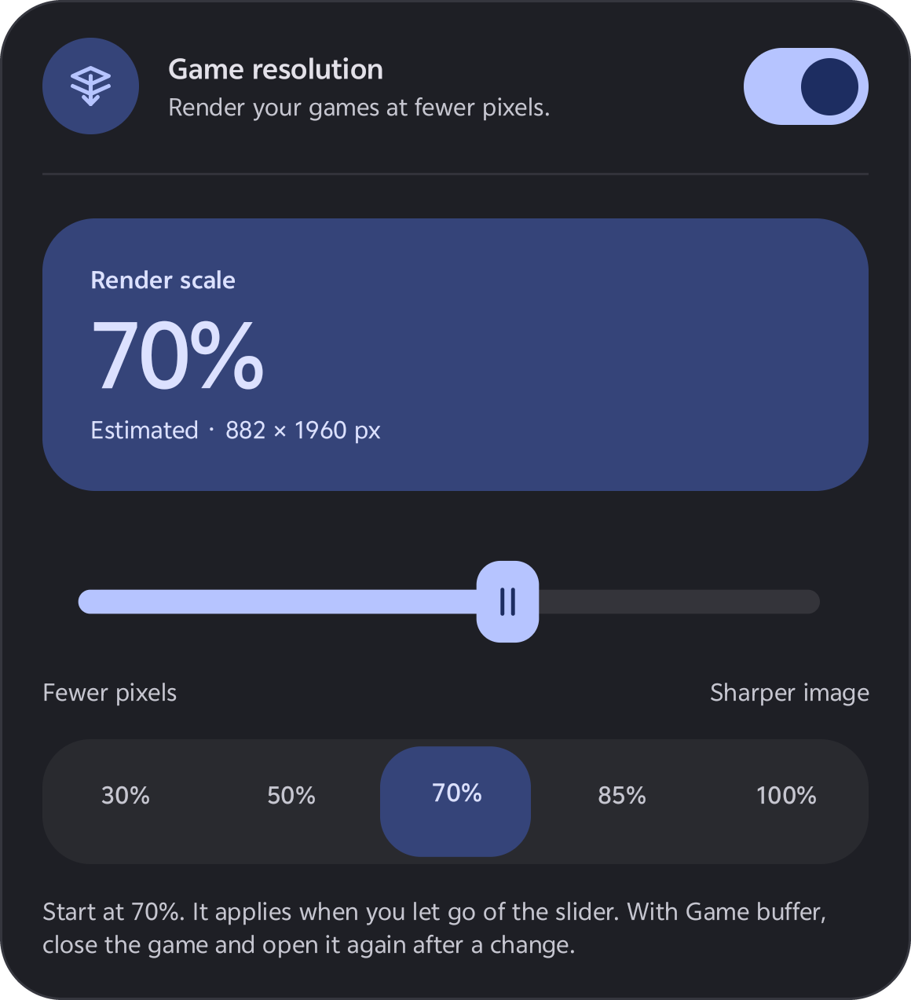
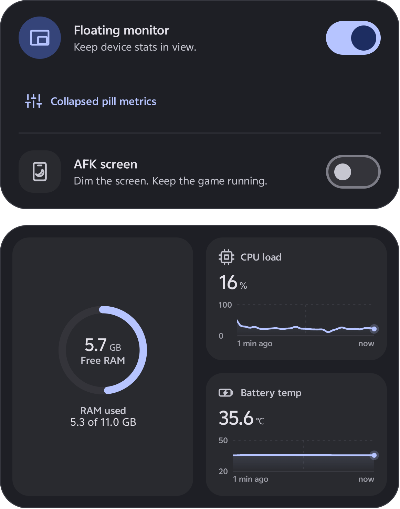
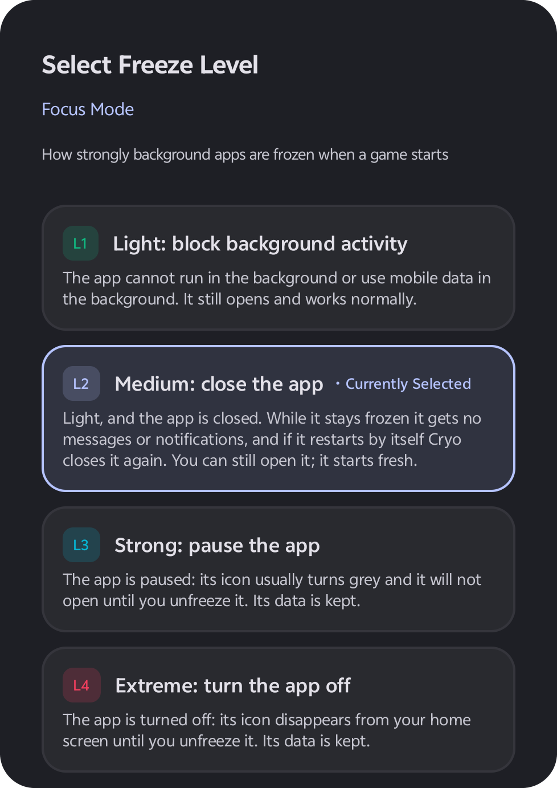
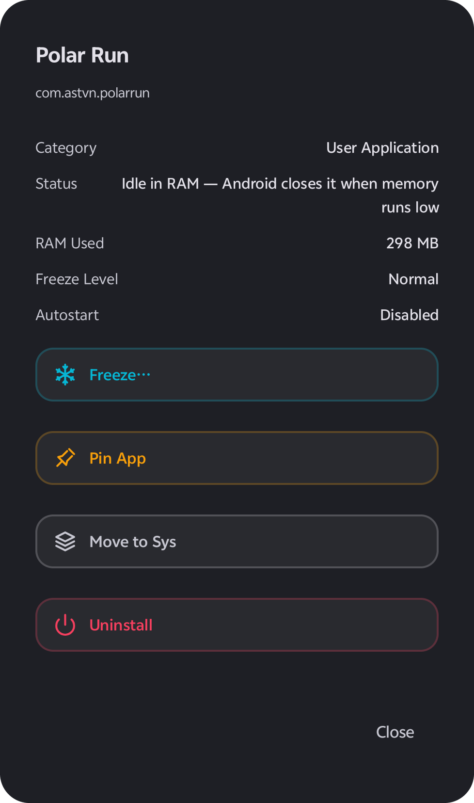
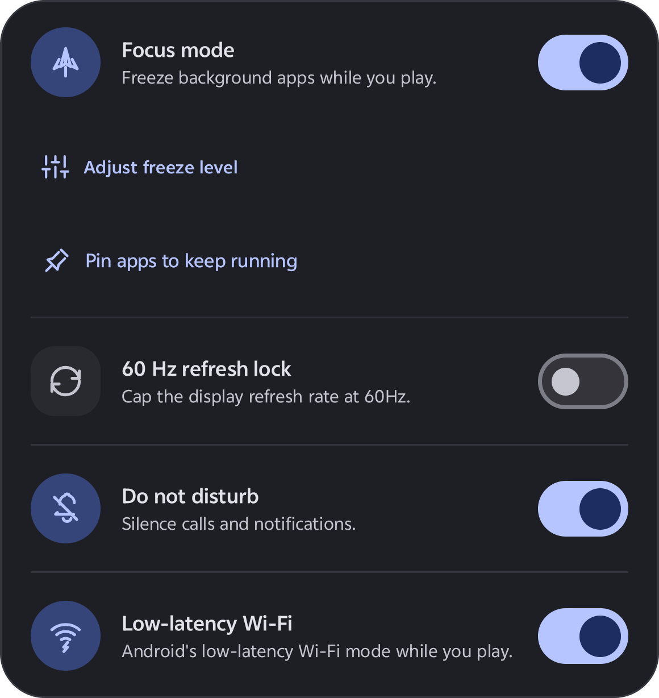

ADB-Level Game Control.
Zero Root Required.
Cryo gives Android gamers direct control over settings that normally require ADB commands: per-game render resolution (100% down to 30%), 4-level background app freezing, refresh rate lock, AFK black overlay, and real-time hardware telemetry via Shizuku.
Double-tap (or double-click) anywhere on this black screen to wake
The game keeps running underneath. Note: The game itself still uses battery; only the display panel draws less power.
$ adb shell "cmd game set --downscale 0.7 com.astvn.polarrun"
Closes the app + blocks background wakeup. If it restarts itself, Cryo closes it again.
Executes real system commands through Shizuku's open-source ADB binder. Guided 1-time Wireless Debugging setup on Android 11+.
Adjust game render resolution in 5% steps. Game Buffer mode (Android 13+) scales only the game so system UI stays razor-sharp.
Records original resolution, refresh rate & DND before changing them. Restores automatically on game exit, reboot, or uninstall.
No sign-up, no cloud login. Your game list, pinned apps, and session history stay on your device. Honest telemetry — never faked.
cmd game downscale
Game Mode Buffer Scaling
Uses Android's native GameManager service to resize only the target game's internal surface buffer (from 100% down to 30% in 5% steps). Your status bar, notifications, keyboard, and floating monitor remain at 100% native sharpness.
wm size + wm density
Fullscreen Mode + Resolution Lock
Changes the display resolution (wm size) while a selected game is on screen. For games that read screen size only once at startup, enable Resolution Lock to keep the scaled resolution active outside games too.
Enable Wireless Debugging
Open Developer Options → Wireless Debugging → Pair device with pairing code. Enter the 6-digit code into the Shizuku notification.
Tap 'Start' in Shizuku
Shizuku starts a local ADB server in seconds. (Note: On some phones, Shizuku needs to be started again after a phone reboot.)
Grant Permission in Cryo
Open Cryo and tap Allow on the Shizuku prompt. All resolution, freeze, and FPS telemetry controls unlock immediately.
Write-Ahead Undo Ledger: Every Change Can Be Undone
Before overriding screen resolution (wm size / density), refresh rate, or Do Not Disturb, Cryo writes your original factory values to a persistent local ledger. When you leave the game or toggle a feature off, Cryo restores them immediately. If your battery dies or the phone restarts mid-game, BootRecoveryReceiver restores your display and unfreezes apps as soon as Cryo runs again with Shizuku. Even uninstalling Cryo while Shizuku is active triggers automatic cleanup.
At 70% scale, your GPU draws only 49% of native pixels per frame (0.7 × 0.7).
Light • Medium • Strong • Extreme background package control.
Black overlay at brightness 0 while the game keeps running; double-tap to wake.
Hardware refresh rate lock while your chosen game is on screen.
Built on Verified Android System APIs. Zero Placebo.
Game Render Resolution (GFX Tool)
Pick one render scale for the games you tick, from 100% down to 30% in 5% steps. Choose Game Buffer mode (recommended on Android 13+) so only the game renders at a lower resolution while the rest of your phone stays sharp, or Fullscreen mode (wm size) with optional Resolution Lock.
- ■ Game Buffer (Android 13+): isolated per-game surface scaling
- ■ Fullscreen (wm size) + Resolution Lock outside games
- ■ Auto re-applies after phone restart or game update

FPS Meter & Floating Monitor
A compact window over your game with the metrics you choose: FPS, CPU & GPU load, free RAM, and CPU/GPU/battery temperature. Without Shizuku, the FPS cell clearly states it needs Shizuku, and values a phone does not expose are hidden — never guessed.

Freeze Background Apps & One-Tap Thaw
Inspect running apps and their live RAM footprint, then freeze each at one of 4 levels: Light (blocks background work), Medium (force stop), Strong (paused until unfrozen), or Extreme (disabled & hidden from launcher). Background system services with no launcher icon are safely limited to temporary stop.


Game Mode Hardware Switches
Automate in-game comfort and display rules the moment a selected game launches: AFK Black Screen (0% brightness overlay while the game keeps running; double-tap to wake), 60Hz Refresh Rate Lock, Do Not Disturb, and Android 10+ Low-Latency Wi-Fi mode.

Pin Essential Apps. Freeze the Rest in 1 Tap.
Try pinning/unpinning apps below (like Messages, Alarm, or Banking), then click 'Trigger Focus Mode' to see how Cryo freezes unpinned background RAM hogs when a game starts and thaws them when you leave.
Post-Match Session Telemetry
Sampled every 5 seconds: play time, peak battery temperature, battery %, power draw, and (with FPS cell on) average & 5% low FPS.
Zero Account. Local-First Privacy.
Cryo requires no registration, no email sign-up, and no cloud account. Your game configurations, pinned apps, undo ledger, and session reports are stored on your device.
To keep Cryo free to download, ads are served via Unity LevelPlay (ironSource) and Unity Ads (with Google UMP GDPR consent support). Full seller verification is published at our root /app-ads.txt.
Every Feature Works on Free. Go PRO for Unlimited Actions & Zero Ads.
Full access to resolution scaling, all 4 freeze levels, Focus Mode, and the floating FPS monitor using a free action balance.
- • Ticking a game, toggling a feature, or freezing an app uses 1 action from your free balance
- • Watch a short rewarded video anytime to refill actions
- • Unfreezing apps & restoring system settings is ALWAYS free (never costs an action)
Unlocked directly via Google Play Billing tied to your Play Store account — no external login needed.
- ✓ Unlimited actions — toggle, scale & freeze without limits
- ✓ 100% Ad-Free — all banner, interstitial & rewarded ads removed
- ✓ Automatic restore across reinstalls via Google Play Billing